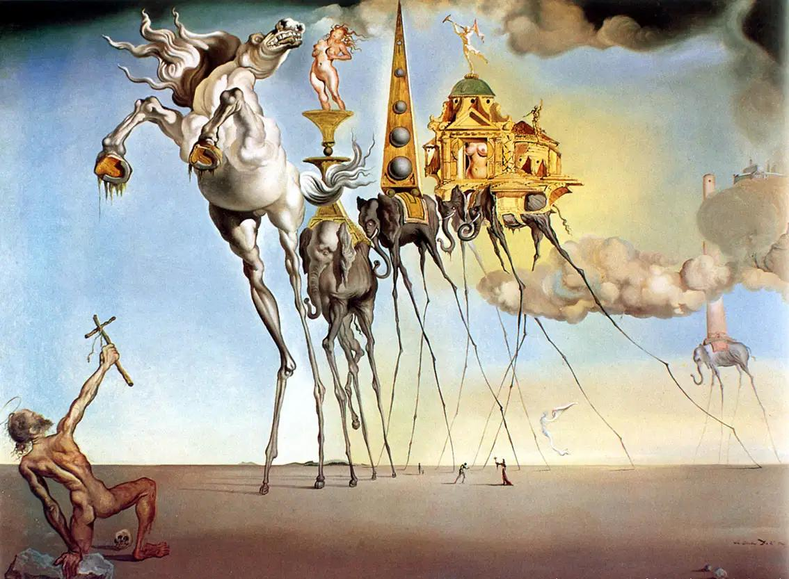

Il Surrealismo: quando il sogno diventa linguaggio
Come il Surrealismo dà forma alla natura profonda del sogno

Come il Surrealismo dà forma alla natura profonda del sogno
Come il Surrealismo dà forma alla natura profonda del sogno
provaprova